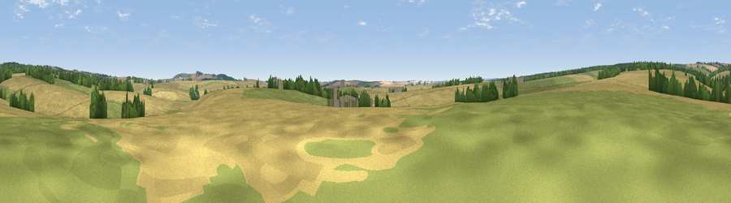

Viewpoint near Sixpenny Handley
#43953 in England · top 91% of its area beats it · near Sixpenny HandleyWhere it is
The exact computed spot (ST 99263 17732). Click the marker for map links.
The view, rendered

A 360° render of this exact spot computed from the terrain model, tree cover and land cover — summer colours, afternoon light, calibrated against photographs of famous viewpoints. Real trees, hedges and buildings will differ in detail.
The panorama
Grey silhouette: terrain skyline in each direction (720 bearings, Earth curvature and refraction included). Dashed green: skyline with trees (+15 m) and buildings (+8 m) as obstacles. Blue strip: how far the ground is visible on each bearing.
Where the view opens
Wedge length = distance to the farthest visible ground on that bearing (vegetation-aware). Rings at 10, 25 and 50 km.
What fills the view
66% cropland · 29% grassland · 6% woodland
Angular shares of the visible panorama (visual magnitude), not map area. Landscape diversity 0.35 (0–1 Shannon).
Key numbers
More beautiful places nearby
The staircase of upgrades: each row has a higher view potential than everything closer. Driving times are estimates from straight-line distance, calibrated against real road routing — check an actual route before setting out.
| Place | Direction | Drive | Score |
|---|---|---|---|
| Woodminton Down | NNE · 4 km | ~9 min | 53.2 |
| Trow Down | NNW · 5 km | ~10 min | 67.5 |
| Monk's Down | WNW · 7 km | ~14 min | 74.4 |
| Viewpoint near Berwick St John | WNW · 7 km | ~15 min | 78.2 |
| Viewpoint near Harman's Cross | S · 36 km | ~55 min | 80.8 |
| Nine Barrow Down | S · 37 km | ~55 min | 81.1 |
| Viewpoint near Kimmeridge | SSW · 37 km | ~55 min | 82.9 |
| Ballard Down | S · 37 km | ~55 min | 83.2 |
50.95901, -2.01187 · source: osm peak · position refined by local search. Computed location — check access rights before visiting.